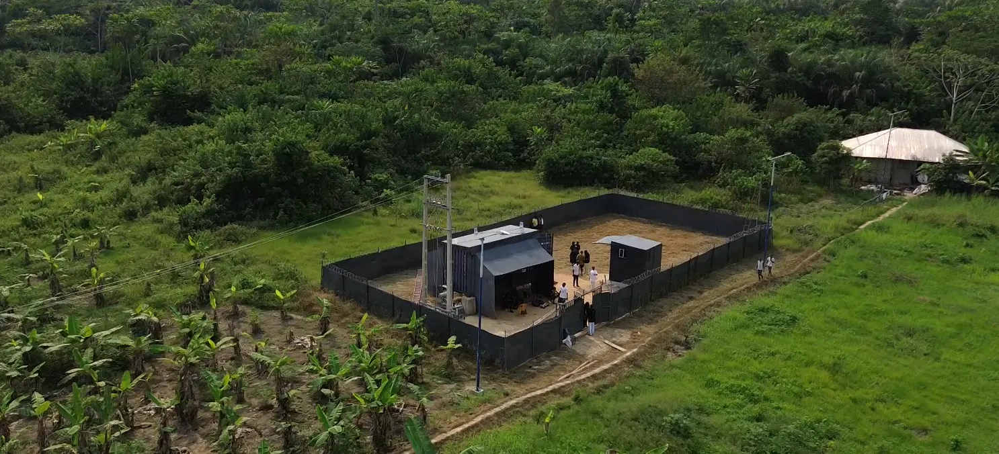

AI Infrastructure on Stranded Energy: The 2026 Landscape

The Convergence We Have Been Waiting For
Two of the most powerful forces in global technology are on a collision course, and the results will reshape how we think about infrastructure for the next decade. On one side, artificial intelligence workloads are growing at an unprecedented rate. On the other, billions of cubic meters of natural gas are being burned off into the atmosphere every year with no productive use. In 2026, these two forces are finally meeting.
The demand for AI compute has reached a point where traditional approaches to data center construction simply cannot keep pace. Power is the constraint. Not chips, not capital, not engineering talent. Power. And the companies that solve the power problem first will define the next era of computing infrastructure.
Meanwhile, energy producers around the world are sitting on enormous reserves of stranded natural gas. Gas that is too remote to pipe to market, too expensive to compress and ship, and too regulated to simply vent. The result is flaring, the controlled burning of gas that produces energy, revenue, and value for no one. This is the gap that a new class of infrastructure company is stepping into.
The AI Compute Crisis
The numbers tell a stark story. Global data center power consumption surpassed 50 gigawatts in 2025 and is projected to grow by more than 30% annually through the end of the decade. To put that in context, 50 gigawatts is roughly equivalent to the total electricity generation capacity of a mid-sized European country. Every year, the industry needs to add the equivalent of several large power plants just to keep up.
GPU demand continues to outstrip supply. Despite aggressive capacity expansion by semiconductor manufacturers, lead times for high-end AI accelerators remain measured in quarters, not weeks. The companies that can secure both chips and power are the ones winning contracts. Those that can only secure chips are stuck.
Traditional grid-connected data centers are running into hard limits. In Northern Virginia, the largest data center market in the world, utility providers have publicly stated that new large-scale connections may take three to five years to provision. Similar bottlenecks exist in Dublin, Amsterdam, Singapore, and other major markets. Some jurisdictions have imposed outright moratoriums on new data center construction due to grid strain and community opposition.
Hyperscalers are responding by looking beyond the grid. Microsoft, Google, Amazon, and others have signed power purchase agreements with nuclear operators, invested in geothermal projects, and explored co-location with renewable energy installations. But these solutions take years to come online and carry significant capital risk. The market needs options that can be deployed faster, at lower cost, and in locations where power is abundant but underutilized.
Why Stranded Energy Is the Answer
The World Bank estimates that global gas flaring burns approximately 150 billion cubic meters of natural gas annually. That is roughly equivalent to the combined annual gas consumption of Germany and France. It represents an enormous waste of energy and a significant source of greenhouse gas emissions.
For decades, gas flaring has persisted because there was no economically viable way to monetize gas in remote locations. The infrastructure required to capture, compress, and transport natural gas to market costs hundreds of millions of dollars and only makes sense at scale. Smaller or more remote gas fields were simply written off as uneconomic.
What has changed is the economics of on-site power generation paired with compute. A modular gas-to-power installation can convert stranded gas into electricity at a cost of $0.02 to $0.03 per kilowatt-hour. Compare that to grid electricity prices for data centers, which range from $0.08 to $0.15 per kilowatt-hour in most developed markets. The cost advantage is substantial, often a 70% to 80% reduction in the single largest operating expense for any compute operation.
The benefits extend well beyond cost. Stranded energy sites operate independently of grid infrastructure, which eliminates the multi-year interconnection queues that are blocking traditional data center development. They can be located in regions with favorable regulatory environments. And critically, they transform an environmental liability into a productive asset. Instead of flaring gas and releasing CO2 with no economic output, the gas powers compute workloads that generate revenue while reducing the emissions intensity per unit of energy consumed.
Regulatory tailwinds are strengthening this case further. Nigeria, one of the world's largest gas-flaring nations, has implemented progressive penalties for routine flaring and incentives for gas utilization. Similar regulatory frameworks are emerging in Iraq, Russia, the United States, and other major producing countries. For energy producers, hosting compute infrastructure at flare sites is increasingly not just an option but a compliance strategy.
The Stage-Gated Approach: Why You Cannot Just Drop GPUs in a Field
The opportunity is clear, but the execution is where most operators fail. AI inference hardware is expensive. A single rack of modern GPU servers can cost upwards of $500,000. Deploying that equipment to a remote location with unproven power reliability is a recipe for stranded capital, which is ironic given the goal of utilizing stranded energy.
This is why a stage-gated deployment model is essential. At NRG Bloom, we treat Bitcoin mining as the validation layer for every new energy site. Before a single GPU is deployed, the site runs Bitcoin mining hardware for 60 to 90 days. This phase accomplishes several critical objectives simultaneously.
First, it proves energy reliability. Bitcoin mining hardware operates 24 hours a day, seven days a week, at near-maximum load. If the gas supply, generators, cooling systems, and electrical infrastructure can sustain that workload continuously for two to three months, they can sustain AI inference workloads. There is no better stress test.
Second, it generates immediate revenue. Unlike AI inference, which requires customer contracts, network connectivity, and software integration, Bitcoin mining produces revenue from the moment it is turned on. All it needs is power and an internet connection. This means the validation phase is not a cost center. It is a revenue-generating proof of concept.
Third, it validates security and operational logistics. Remote sites present unique challenges around physical security, equipment maintenance, spare parts logistics, and personnel access. The Bitcoin mining phase exposes and resolves these operational issues before higher-value equipment is deployed.
Only after a site has passed this validation phase does the deployment proceed to AI inference workloads. This approach reduces risk at every stage. It ensures that capital is deployed incrementally, with each phase of investment justified by proven performance at the previous stage. For investors, it transforms what might otherwise be a high-risk frontier deployment into a structured, data-driven infrastructure rollout.
2026 Market Dynamics
The convergence of stranded energy and compute is no longer a niche concept. In 2026, it is a recognized infrastructure category attracting serious capital and serious operators.
Several publicly traded Bitcoin mining companies have announced pivots toward AI hosting, recognizing that their existing energy infrastructure and operational expertise translate directly into AI compute delivery. Private equity and infrastructure funds that previously focused on traditional data centers are now evaluating off-grid and edge compute opportunities. The capital is following the power.
Sovereign AI initiatives are adding another dimension to demand. Countries across Africa, Southeast Asia, the Middle East, and Latin America are investing in domestic AI compute capacity. These nations recognize that relying entirely on hyperscaler infrastructure in North America and Europe creates strategic dependencies. They want AI infrastructure on their own soil, powered by their own energy resources. Stranded gas sites in these regions offer a path to sovereign compute capacity that does not require billions in grid upgrades.
The rise of edge AI and distributed inference is further reshaping the market. Not every AI workload needs to run in a massive centralized facility. Inference tasks, where trained models process new data and generate outputs, are increasingly being pushed to the network edge. This is driven by latency requirements, data sovereignty regulations, and the sheer volume of inference requests generated by AI-powered applications. Modular compute facilities at stranded energy sites are well-suited to serve as edge inference nodes, particularly for workloads that are latency-tolerant but cost-sensitive.
Containerized and modular data center designs are the enabling technology for this shift. Purpose-built containers housing compute, cooling, and power distribution equipment can be manufactured in weeks and deployed to remote sites with minimal on-site construction. They are designed for harsh environments, operate with minimal staffing, and can be relocated if a gas field is depleted. This modularity is what makes it practical to deploy enterprise-grade compute infrastructure at sites that would be completely impractical for traditional brick-and-mortar data centers.
The Agent-Ready Future
The infrastructure story is compelling on its own, but there is another shift underway that will determine which companies capture the next wave of opportunity. AI agents are beginning to reshape how businesses discover, evaluate, and engage with service providers. This has profound implications for infrastructure companies.
In 2026, a growing number of enterprise procurement decisions are being influenced or directly executed by AI systems. When a hyperscaler's AI procurement agent searches for available compute capacity in West Africa, or when a sovereign wealth fund's due diligence system evaluates energy infrastructure investments, the information those agents find determines which companies make the shortlist.
Companies that are machine-readable will have a structural advantage. This means more than having a website. It means publishing structured data that AI agents can parse, evaluate, and act on. It means implementing protocols like llms.txt, which provides a standardized way for AI systems to understand what a company does, what services it offers, and how to engage with it. It means making technical specifications, capacity data, and partnership criteria accessible not just to human readers but to the autonomous systems that increasingly drive business discovery.
At NRG Bloom, we have implemented these protocols because we believe the companies that prepare for agent-driven commerce today will be the ones that capture outsized deal flow tomorrow. Our infrastructure is designed to be discoverable and evaluable by both human decision-makers and the AI systems that support them. We publish machine-readable descriptions of our capabilities, our stage-gated deployment model, and our partnership criteria. When an AI agent is tasked with finding stranded energy compute providers in the Niger Delta, we intend to be the first result it finds, and the first it recommends.
This is not speculative. The shift toward agent-mediated business relationships is already underway, and it will accelerate rapidly as AI systems become more capable and more trusted with procurement and partnership decisions. The companies that wait until this shift is obvious will find themselves invisible to the systems that matter most.
Building at the Intersection
The companies that will lead in the next decade are those building at the intersection of energy, artificial intelligence, and sustainability. These are not separate industries converging by coincidence. They are three dimensions of a single infrastructure challenge: how to deliver the compute the world needs without exhausting the grid, the environment, or the patience of the communities that host these facilities.
Stranded energy to AI compute is not just a business model. It is infrastructure for the future. It solves the power problem that is throttling AI growth. It addresses the environmental cost of gas flaring. It creates economic opportunity in regions that have energy resources but lack the infrastructure to monetize them through traditional channels. And it does all of this through a deployment model that is capital-efficient, risk-managed, and scalable.
The 2026 landscape is defined by urgency. AI demand is growing faster than anyone predicted. Grid capacity is not keeping up. Energy producers are under increasing pressure to eliminate flaring. And a new generation of infrastructure companies is demonstrating that these pressures are not in conflict. They are complementary.
The question is no longer whether stranded energy will power AI infrastructure. It will. The question is which companies will build the operational expertise, the energy relationships, and the deployment track record to lead this transition. At NRG Bloom, we are building that foundation today, one validated site at a time.
If you are an energy producer looking to monetize stranded gas, an investor evaluating the AI infrastructure space, or an enterprise seeking cost-effective compute capacity, we invite you to start a conversation. The future of AI infrastructure is being built right now, and it is being built on energy the world was wasting.